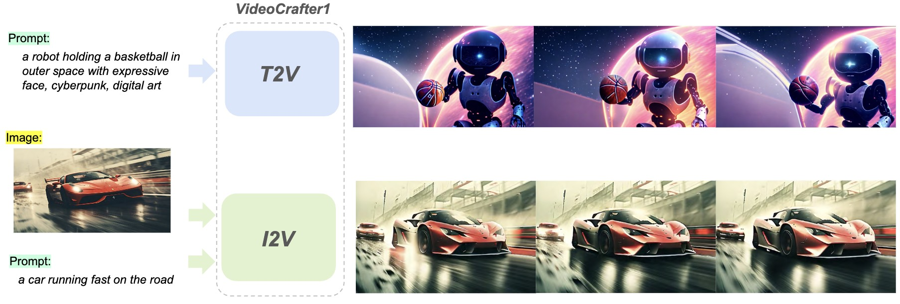

VideoCrafter1
: Open Diffusion Models
VideoCrafter1
: Open Diffusion Models
for High-Quality Video Generation
Shaoshu Yang 1,3, Jinbo Xing 1,4, Yaofang Liu 1,5, Qifeng Chen 2,
Xintao Wang 1†, Chao Weng 1, Ying Shan 1
1 Tencent AI Lab 2 Hong Kong University of Science and Technology
3 Chinese Academy of Sciences 4 The Chinese University of Hong Kong 5 City University of Hong Kong
Diffusion Models for Video Generation
The success of text-to-image generation models and the thriving ecosystem of downstream tasks are closely tied to open-source models and active communities, particularly the Stable Diffusion (SD). However, high-quality video generation has not yet been extensively developed within the open-source community and remains primarily confined to start-up companies. Our aim is to create an advanced and user-friendly video generation model that caters to both research and production, thereby contributing to the community's development. In the long run, we envision a video crafting assistant that enables us to bring our imaginative ideas to life through visual creations. Currently, we are taking the initial steps toward developing two open diffusion models for text-to-video (T2V) and image-to-video (I2V) tasks, which are capable of producing high-quality videos.
Discord: Floor33
Based on VideoCrafter1, we set up the Floor33 Discord. Welcom to join and try your own ideas!
Method
We have open-sourced two diffusion models for video generation in VideoCrafter1.
1) The Text-to-Video (T2V) model can generate realistic and cinematic-quality videos with a resolution of 1024 × 576, outperforming other open-source T2V models in terms of quality.
2) The Image-to-Video (I2V) model is designed to produce videos that strictly adhere to the content of the provided reference image, preserving its content, structure, and style. This model is the first open-source I2V foundation model capable of transforming a given image into a video clip while maintaining content preservation constraints.
The framework of the video diffusion model in VideoCrafter1. We train the video UNet in the latent space of the auto-encoder. FPS is taken as a condition to control the motion speed of the generated video. For the T2V model, only the text prompt is fed into the spatial transformer via cross-attention, while for the I2V model, both the text and image prompts are taken as the inputs
Video Demo
Evaluation
Please refer to our EvalCrafter for a comprehensive evaluation
Notes
- Citation: If you are using the code, models, and data in your research or are inspired by our work, please cite.
- License: Our code, models and data are distributed under Apache 2.0 License.